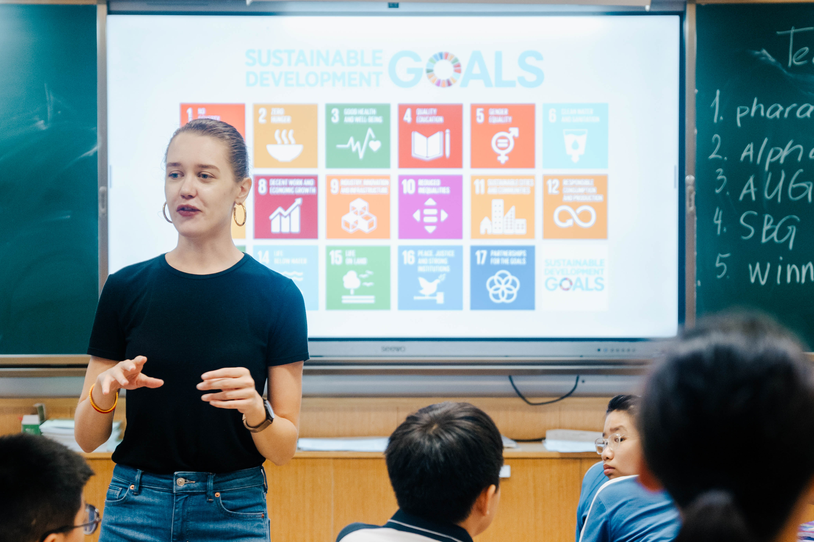
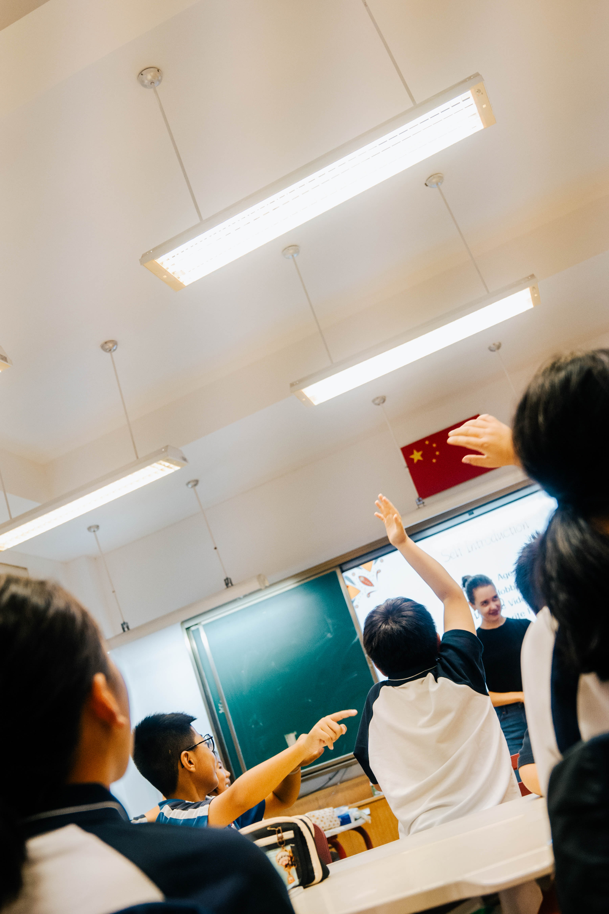
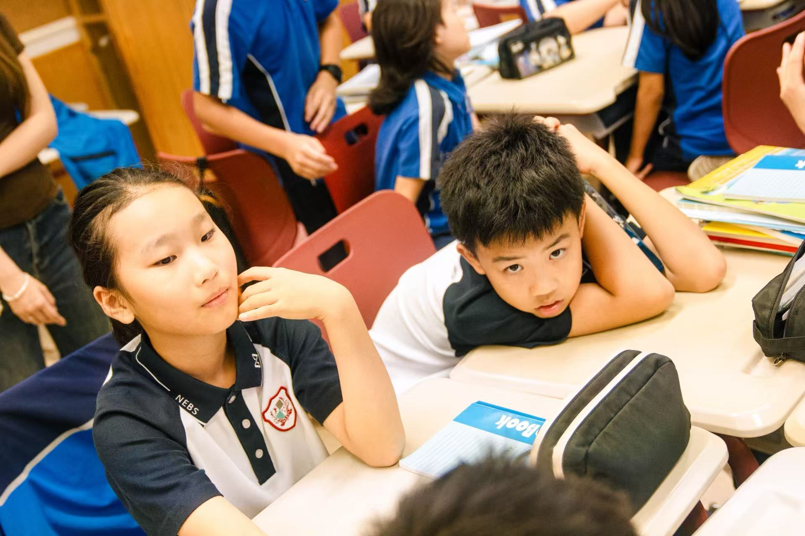
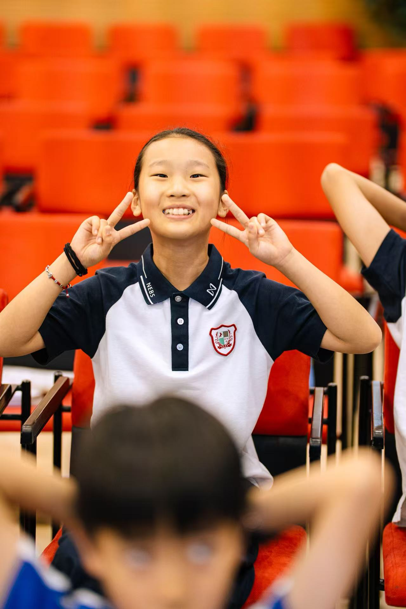
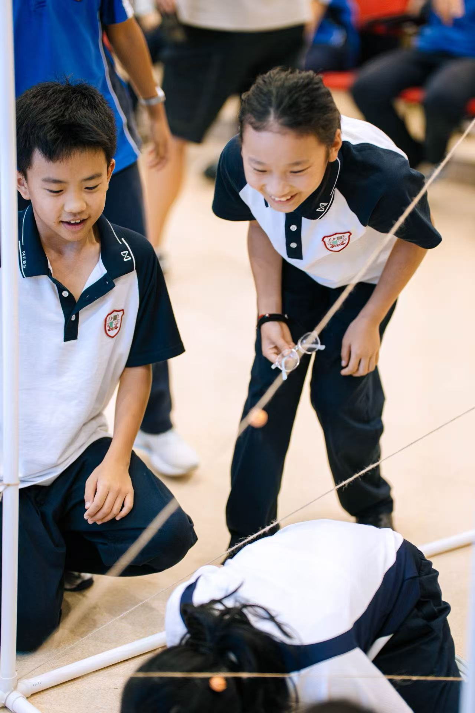
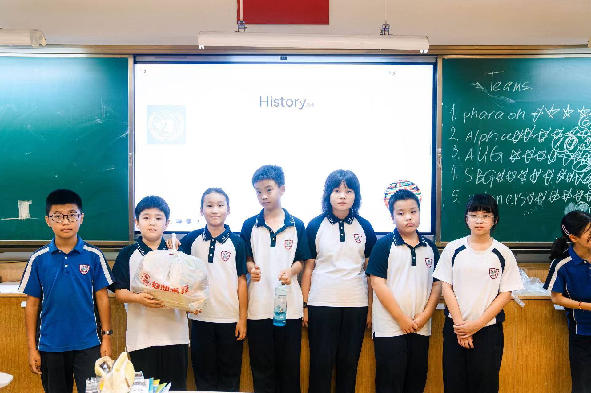
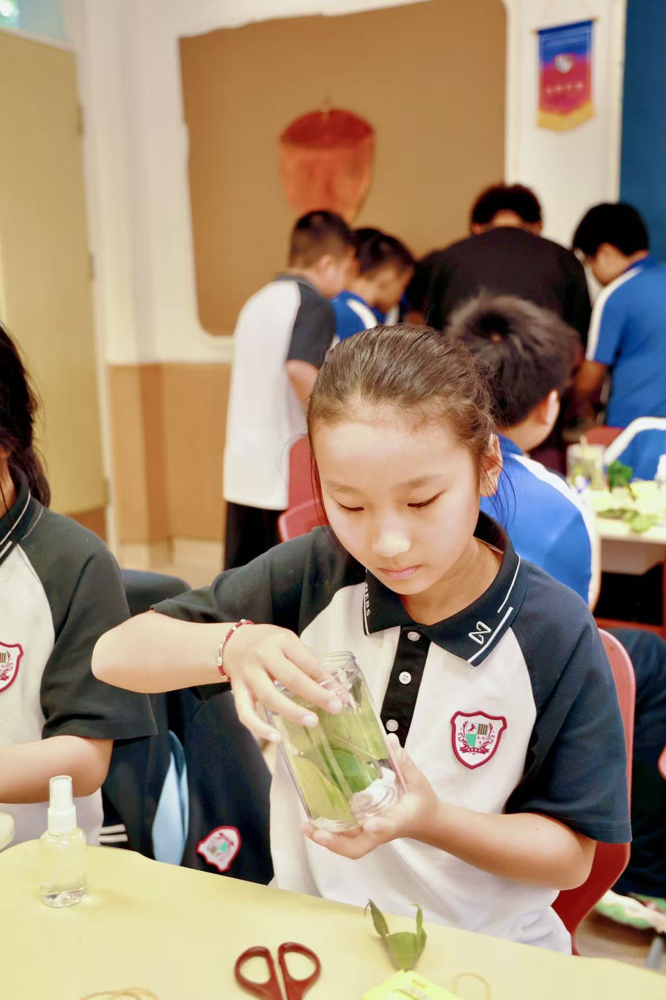

Welcome to Nicole's Lab!
Lesson Summary (SEP 11)
2025/09/11 Course Summary
--This course explores themes centered around the United Nations Sustainable Development Goals (SDGs)—SDGs website: https://sdgs.un.org—focusing on 17 specific topics including environmental protection, quality education, and responsible consumption for learning and expansion. The themes aim to cultivate our sense of social responsibility, enabling us to grow through practice and become influential global citizens of the future. Through interactive discussions, project creation, and enrichment activities, students gain deep insights into global challenges and learn to apply innovative thinking and teamwork to find solutions.
This week, we held our first team-building session. Students formed new teams, got to know new classmates, chose group names, shared hobbies and strengths, and completed the semester's first icebreaker game: “Crossing the Line.” Participants had to traverse an obstacle-filled “line” without touching the bells on the rope, with the fastest time winning. Everyone actively engaged in the activity, striving for their team's honor. After fierce competition, the first and second place teams emerged victorious, earning generous gift packages as rewards!






